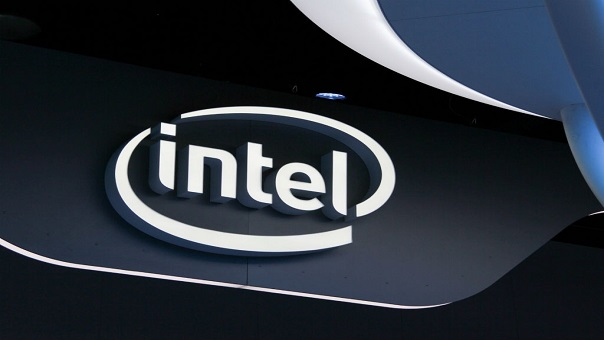

Airbus Helicopters ha completado recientemente la primera prueba a gran escala para el sistema de propulsión del ‘CityAirbus’, un vehículo de despegue y aterrizaje vertical eléctrico que puede albergar múltiples pasajeros, autopilotado, diseñado para la movilidad aérea urbana. Durante esta fase de pruebas, el equipo de ‘CityAirbus’ comprobó minuciosamente el rendimiento individual de las hélices de conducción, así como la integración de la unidad de propulsión a escala completa con dos propulsores, motores eléctricos de 100 KW Siemens y todos los sistemas eléctricos.
-

Francia les dirá adios a los vehículos
de diesel y gasolina en 2040.
-

Toyota se pone al frente de
los autos autónomos.
-

Prihiben carros autónomos de UBER
en San Francisco.
-

Intel compra Mobileye para consolidar
sus planes de carros autónomos.